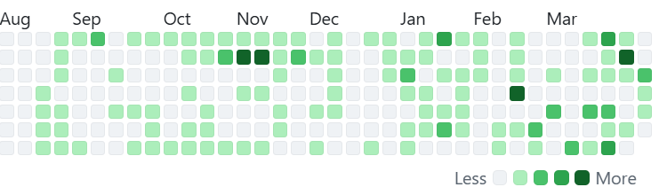

I am a student majoring in Computer Science, and currently enrolled at Boston University. I am deeply passionate about machine learning and full stack, continuously exploring their applications in solving real-world problems, and dedicating myself to gaining expertise in building robust and data-driven applications
a cool chart:
GPA: 3.9
GPA: 3.9
Apart from being a student, I enjoy hanging out with others, cracking puzzles, and creating real-world impact applications. I also indulge in several sports such as ping pong and badminton, and believe in maintaing an active lifestyle through regular gym workouts.
When indoors, I love following various Asian cultures such as Anime, K-pop, and Chinese-cooking, and also take some interest in Strategic and MMORPG games.
and most of all: